5 - Tilemaps
⚠️
Denne guiden var originalt skrevet for TileMap, som nå er utdatert. Vi skal bruke TileMapLayer i stedet. Funksjonene vi går gjennom her fungerer likt i begge.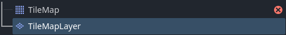
I denne guiden bruker vi Kenney platformer pack. dra spritesheet_ground.png og spritesheet_tiles.png inn i FileSystem vinduet.
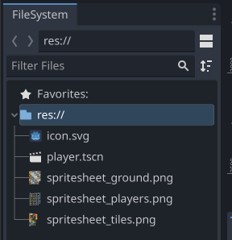
Vi starter med en ny tom 2D sene.
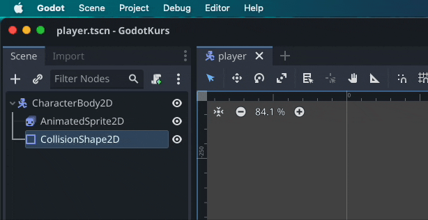
Start med å legge til en TileMapLayer node, og markerer den.
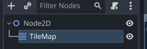
I inspector klikker du på pilen ned ved Tile Set, velger New TileSet og klikker på den når den er lagd. Så setter du Tile Size til å matche størrelsen på tiles-ene i ditt tilesheet. I dette eksempelet bruker vi 128x128 piksler pr tile.
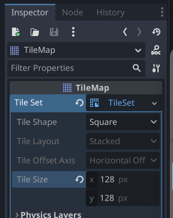
Velg TileSet fanen nederst i vinduet, lag et nytt atlas, og dra
kolisjons formspritesheet_ground.png til Texture
Om du glemte å sette rett oppløsning før du la inn grafikken vil det bli tydelig nå, om tiles ikke matcher rutenettet. Letteste løsningen, slett teksturen fra tileset, fiks oppløsning og importer den igjen.
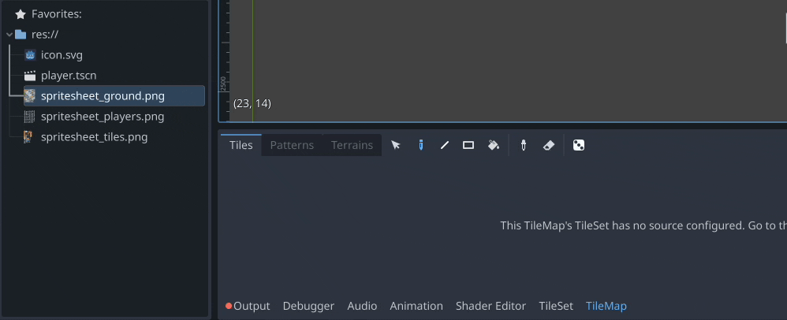
Nå kan du velge TileMap fanen og begynne å tegne opp en level med tiles.
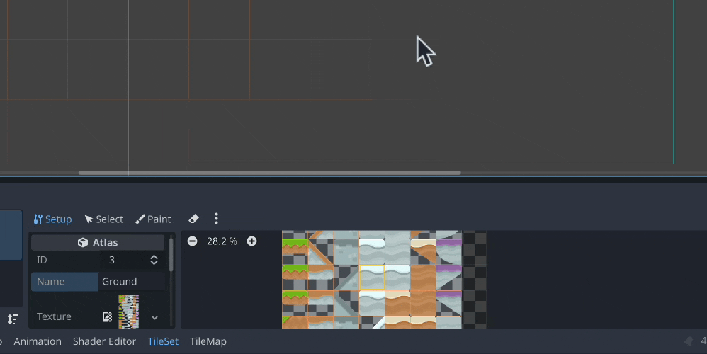
Men, enn så lenge er dette bare visuelt, en karakter vil f.eks falle rett gjennom bakken.
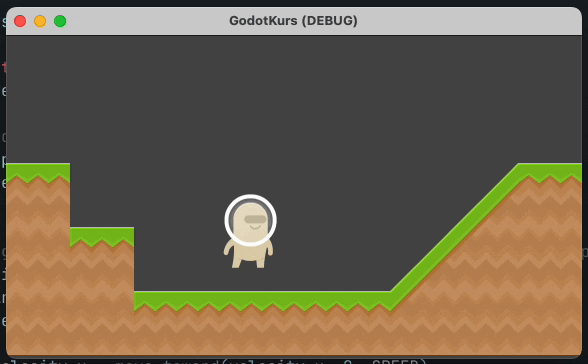
Marker TileMapLayer noden, klikk på TileSet i inspektøren og legg til et nytt element under Physics Layers. Så kan du åpne TileSet fanen og bytte til Select i stedet for Setup.
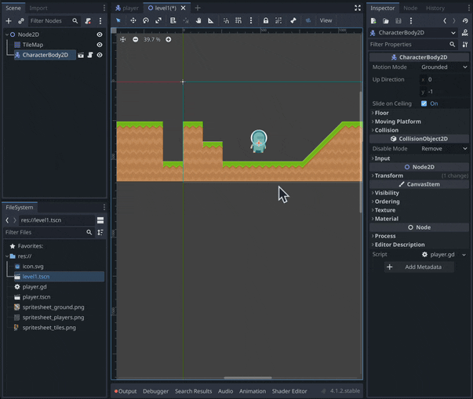
Herfra kan vi velge en tile, bla ned til Physics og velge det nye laget vi lagde. Du kan trykke på F for å fylle hele tilen med en kollisjonsform. Herfra kan du bruke node verktøyene for å sette opp formen slik at den matcher grafikken.
Tips: du kan ha flere Physics Layers på samme TileSet med forskjellige collision layers og masks
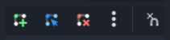 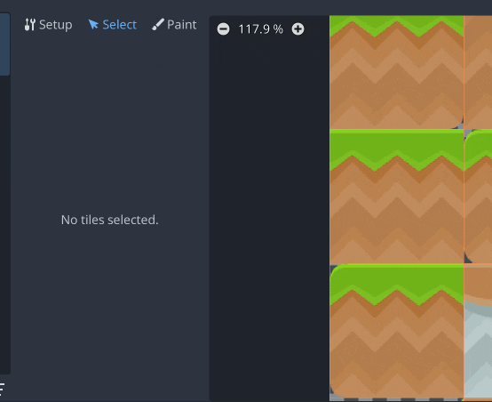
Du kan gå på Debug og slå på Visible collision shapes for å se om du har glemt å legge til kollisjon på noen elementer.
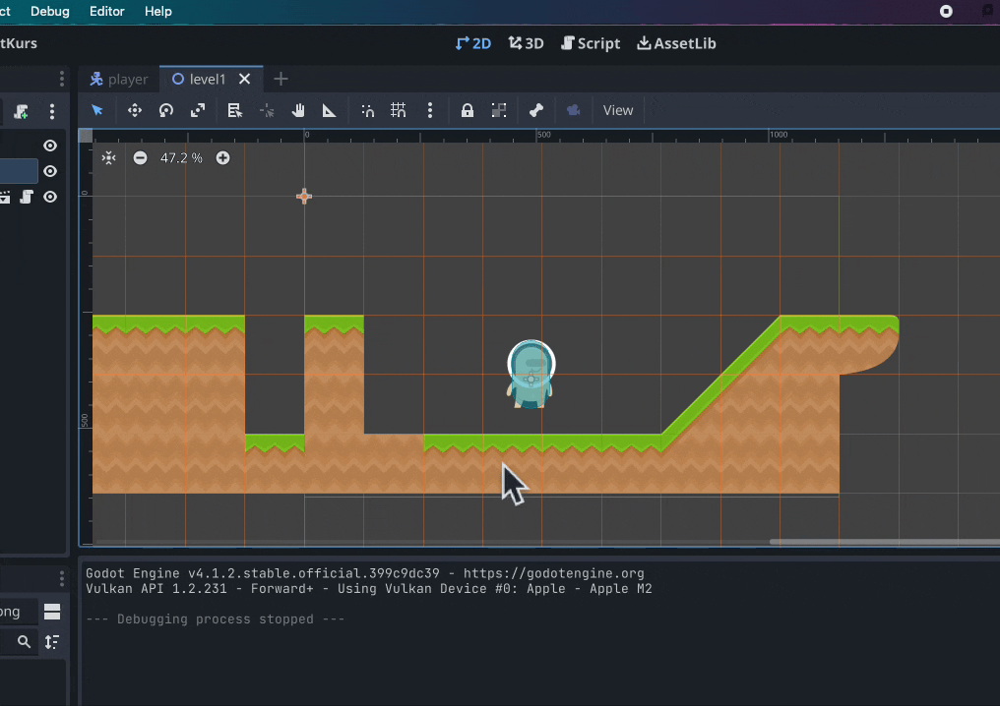